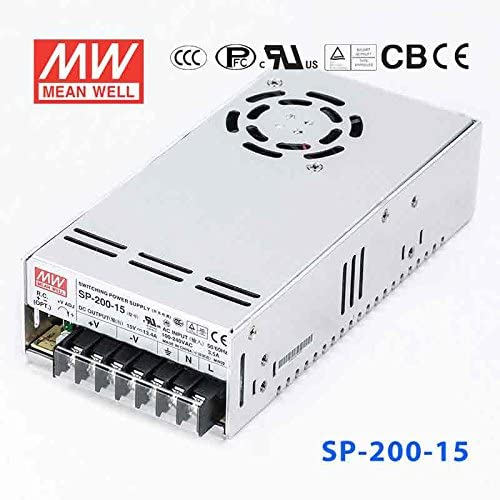
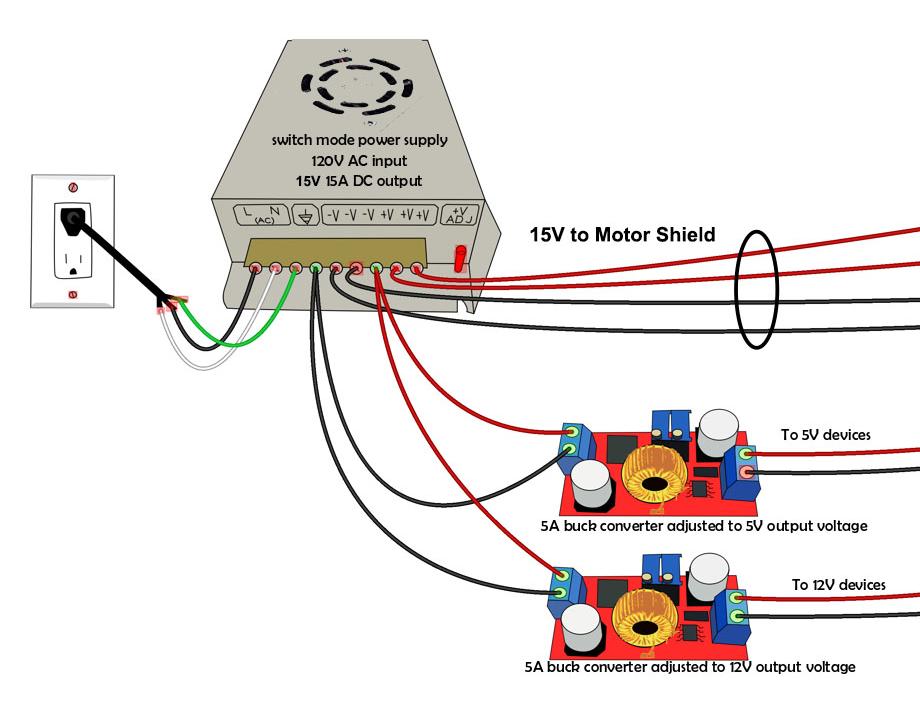
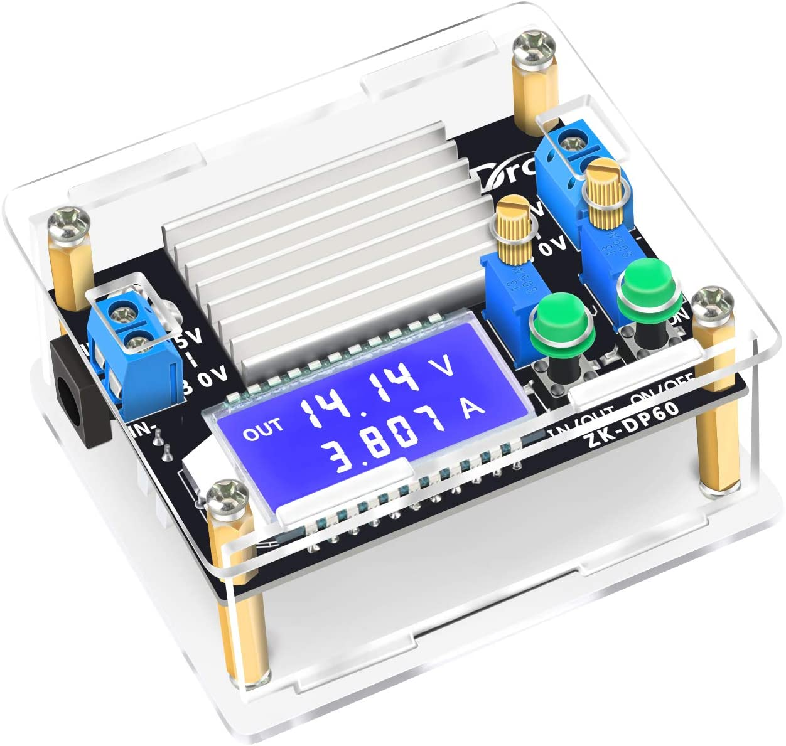

{kind=link}
Power Supplies


The power supply is one of the most important parts of your setup. You need to select a clean, filtered power supply that can supply the correct voltage and deliver the amount of current required by your devices.
How many power supplies do I need?
How many power supplies you need depends on the type of EX‑CommandStation you have:
If you have an EX‑CSB1 then you only need one (1) power supply.
If you have a do-it-yourself (DIY) EX‑CommandStation based on the Arduino Mega with a EX‑MotorShield8874 Motor Shield, then you only need one (1) power supply. One for the motor driver. The motor driver will pass power to the Arduino.
If you have a do-it-yourself (DIY) EX‑CommandStation based on the Arduino Mega with a Standard Motor Driver, then you need two (2) power supplies. One for the Arduino and one for the motor driver.
If you have a do-it-yourself (DIY) EX‑CommandStation based on the Arduino Uno, then only you need one (1) power supply. One for motor driver. Since the Uno must be connected to a PC or RPi to use, the Uno will be powered by the USB from the PC.
Engineers Only! If you have a do-it-yourself (DIY) EX‑CommandStation based on the ESP32 or Nucleo with a EX‑MotorShield8874, then you only need one (1) power supply. However since these board needs only 3.3v, modifications to the boards must to be made to support this.
Why does the Mega/ESP32/Nucleo with Standard motor driver need two power supplies?
For Arduino Mega with Standard Motor Driver, you need at least two different voltages. The Arduino needs ~5vDC and the Motor driver needs significantly more voltage to provide power to the track (see below).
Both your microcontroller (the Arduino) and the motor driver need power. While we recommend a 7-9 Volt, 1 Amp, DC power supply for an Arduino Uno or Mega, there are other ways to power it.
The voltage requirement to the motor driver does not change based on how you power your Arduino, you need the correct voltage and amperage for your scale/gauge and layout.
Note
It is possible to get multiple voltages from one power supply. How to do that is covered below in the Using one power supply with cheap converters to power everything.
Powering the Microcontroller
Note, this primarily applies to the Arduino Mega with a Standard Motor Driver. (See the previous section.)
Barrel Connector
This is where we can connect our 7-9V DC supply. The power goes through a voltage regulator on the Arduino and converts the 7-9V to the 5V the board can use. You will still need a separate source of power for the Motor Driver.
USB Connector
If you always will have a computer connected to your Command Station (for example when using JMRI or EX‑WebThrottle), the 5V from your computer can power it. You won’t need separate power supply in addition to the one you need for the Motor Driver.
Most USB ports can only supply 500 milliamps, and this input is protected by a 500mA polyfuse that resets when a short is removed, so be careful about adding anything that will draw current from the Command Station. A Motor Shield, a WiFi shield and a fan that draws 50mA should be fine.
Even if you don’t have a laptop, you can use a 5V, 800mA or more USB power supply like a phone charger and connect it to the USB port.
Warning
We recommend only a 7-9V DC power supply for your Arduino because, despite what may be said on a specification sheet, anything over 5V is generates unnecessary heat in the voltage regulator on an Arduino.
There is a 2V voltage drop in this regulator, so you need a minimum of 7 volts to power the board. 7-9 is perfect. If you used 12V and connected a WiFi board or other devices that also use the 5V power supply on the Arduino, the voltage regulator is likely to overheat.
Barrel Connector and USB at the same time
You may wonder what happens if you have a 7-9V power supply connected to the barrel connector and plug your laptop into the USB port to use the Serial Monitor.
The Uno and Mega actually have a conflict protection circuit. If you plug in a 7V or more power supply to the barrel connector, the Arduino automatically switches internally to use that power supply. So regardless of which connector you plug in first, if the barrel connector has a voltage 7V or greater applied to it, that is the voltage the Arduino will use and the USB connection will just provide communication signals.
Vin pin
You can connect a 7-9V DC power supply with jumper wires. The positive from the power supply goes to Vin and negative to any pin marked “gnd†for ground. This also uses the voltage regulator on the Arduino to convert your supply voltage to 5V. You will still need a separate power supply for the Motor Driver.
5V pin
Engineers only! Arduino recommends against this. You can connect a good quality 5V power supply directly to the 5V pin and ground.
You can NOT ever plug anything into the other power connectors if you connect power this way! This bypasses the voltage regulator on the board which means you can use more current. But it also connects voltage to the output of the 5V regulator.
Be aware that there is no diode for reverse voltage protection and no fuse for overcurrent. Research this option before attempting it.
Powering the Motor Driver
Voltage
Warning
These are common, but not universal, upper limits of what decoders will accept. You should check the manual of your decoders to confirm what they accept, and adjust the voltage down accordingly.
Applying a voltage above what a decoder was designed for may permanently damage it.
The voltage you need depends on the scale/gauge of the locos you intend to run, and the motor driver you have.
For DCC, as a rough guide you need a voltage on the track of…
10v-12vDC for Z scale/gauge
10v-14vDC for N scale/gauge
14v-16vDC for HO/OO scale/gauge
18v-19vDC for O scale/gauge
20v-24vDC for G scale/gauge
Note that for purely DC operation, these voltages should probably be slightly lower maximums.
The voltage of the power supply you need will depend on the type of motor driver you have:
If you have a EX‑MotorShield8874 or EX‑MotorShield8874 the you should not exceed the values listed above. This is because the EX-MotorShield8874 does not drop voltage like the Standard Motor Driver.
If you have a Standard Motor Driver, then you generally will want a power supply between 1 and 2 volts higher than the voltage you want to have on the track. this is because the Standard Motor Driver is inefficient and drops voltage.
Additional Information
N and Z scale/gauge layouts should run at at about 10V-14V to avoid damage to the motors. See this thread to learn more about the pros and cons of running at higher voltages at this TrainBoard Thread
Another good link (along with just about anything written by Mark Gurries), is here: Mark Gurries - Choosing the Right Booster
Most larger scales/gauges will run higher voltages. For reference, Digitrax systems put the rails at around 14V and garden scale could be 18V. Do some homework to determine what voltage is best for your system.
Be aware that the Motor Driver you use will affect the actual voltage at the track. If you use the Standard Motor Driver or any other L298 based shield or controller, you will have a 2V drop at the track. That means that if you use a 12V supply, there will be only 10V at the track. Many people prefer to use a 14.5V DC power supply with these boards. If you use any MOSFET based boards like the IBT_2 and the IRF3205 boards, there is a negligible voltage drop so 12V in will give you 12V at the track.
If you have a power supply you wish to use, but it has an output voltage that is a few volts higher than you need, use either the diode or buck converter method listed below to reduce the voltage.
Amperage
For the EX‑MotorShield8874 or EX‑CSB1 a 5amp power supply will give you plenty of current to handle the maximum of 5amp on channel A to the MAIN track. Channel B for the programming track will only be used occasionally and does not need much current. If you plan to use Channel B as a second MAIN power district, then you may want to go up to to 10amp power supply.
For the Standard Motor Driver, a 3amp power supply will give you plenty of current to handle the maximum of 2amp on channel A to the MAIN track. Channel B for the programming track will only be used occasionally and does not need much current. In fact, it is limited to protect your trains (normally to 250mA).
Running trains on main and programming a loco on Prog at the same time will be fine. The overcurrent limit set in the Command Station will automatically cut power if you go over that number of Amps. A rule of thumb is you can operate 3 to 5 N or HO sound locos on the 2A boards.
For larger layouts with higher current requirements on the MAIN track and a motor driver that can handle those currents, you’ll want power supply that can deliver that larger current. See Motor Drivers for more information about higher current Motor Driver.
A device will only draw the current it needs. So whether you have a 2A power supply or a 20A power supply, if you setup only needs 1A, then both supplies will work just fine, but no sense paying for more than you need. And it is also worth noting that devices that can supply a large current can cause a large amount of damage if you don’t have proper safety features installed like the overprotection feature of the Command Station AND fuses to the track.
Warning
If you think you need more that 5 Amps to your track, you should strongly consider using boosters and power districts.
Types of Power Supply
Wall Warts
Wall warts are a good choice for beginners and those not comfortable with mains wiring. You can get a 12V, 3A, relatively small one for around $8 US.
{kind=link}
Bricks (Laptop Style)
You can also find plenty of laptop type “brick†power supplies. They come in ranges from 12V to 19.5V and 3-5 Amps.
{kind=link}
This is a good 14V, 3A unit
{kind=link}
Note: this power supply is suitable for use in the USA, but the connector tip is not the directly plug-able into the EX‑CSB1. You would need an adapter. https://www.amazon.com/Samsung-Monitor-SoulBay-SyncMaster-Notebook/dp/B07QLRBLWC/
Similar power supplies, suitable for use with the EX‑CSB1 in the USA include:
Since many people have old laptop power supplies that can be 18-19.5V DC, you can use the diode or buck converter method listed below to reduce the voltage.
Adjustable Power Supplies
These have a selector switch to choose the voltage. Be careful to get a model that can deliver the current you need at the voltage you want. Sometimes the maximum output current will vary depending on the voltage selected.

Suitable for use in the USA - https://www.amazon.com/dp/B07J6RC43S/
{kind=link}
Suitable for use in the USA - https://www.amazon.com/Belker-5V-15V-Universal-Adapter-Speaker/dp/B015H0UPWU
Cage Power Supplies
The Meanwell LRS-100-15 power supply is a good choice for larger scales/gauges. It supplies 15V and 105W (that’s 7 amps), so it is plenty for running two channels simultaneously. At only $18, it is an inexpensive and solid option.
{kind=link}
Warning
For the Meanwell LRS-100-15 you will need to do your own mains wiring. If you don’t have experience with this get a friend who does or hire an electrician to do it for you. MAINS POWER IS DANGEROUS!
Dual voltage power supplies
With a dual voltage power supply, you can provide 12V for the Motor Driver and 5V for the Arduino. You may also be able to find higher voltage units if you need such as 14-15V if your scale/gauge trains require it.
Mean Well Dual Voltage Power Supply (5V and 12V)
{kind=link}
Warning
For the Meanwell RD125A, you will need to do your own mains wiring. If you don’t have experience with this get a friend who does or hire an electrician to do it for you. MAINS POWER IS DANGEROUS!
Using one power supply with cheap converters to power everything
Tinkerers and Engineers
Using this method, you select a power supply that can power the track (or your highest voltage devices) and deliver enough Amps to power everything you will connect to it. This includes the DC-DC downconverters (Buck Converters) that take your higher voltage and reduce it to 5V, 7V, 9V, etc. Note that most buck converters are also boost converters, then can take a lower voltage and raise it to a higher one. We will just cover the first option here.
Note
You will still need a wall voltage AC to 12-18V DC power supply with enough Amperage to handle what you want to power. Ex: You need 5A max to the track, are powering 2A worth of lights, and you have 2A of accessories. That is 9A. So you should get a 10A or greater power supply.
15V 13A Power Supplies
Some options for a power supply are the Meanwell SP-200-15 or the ATOS-300-15. They are 15V, 13A supplies. You can use 15V to the Motor Driver and use buck converters to step down the 15V to whatever voltages you need.
{kind=link}
Here is a link to where you can find the Meanwell SP-200-15 Power Supply
Using Buck Converters
The following image shows how to connect buck converters. You start with a power supply with more voltage than the highest voltage you want to convert and with enough current to drive everything you want to power. This example shows a 15V supply that you can connect directly to the input to the Motor Driver which will in turn power your track. If you need to power 5V and 12V devices, you simply get 2 buck converters, connect them in parallel to the 15V output of your power supply (or to extra 15V outputs on the supply), and adjust each one to the voltage output you want. Then connect the converters to your 5V and 12V bus and connect your devices to the correct bus.
{kind=link}
High Power Buck Converters
These come in different sizes. Show here is a 2A and a 6A Version. You can look for “60W 6A Adjustable Voltage Regulator with Cooling Fan”, or “DC to DC 5.5V-30V to 0.5V-30V Power Supply Module”. Or just “Buck Boost Voltage Converter”. The bigger unit usually comes with a fan. A model number is a “ZK-DP60”.
{kind=link}

One example from Amazon, click to follow the link: 5 to 30V Adjustable regulator converter
4 Pack of Buck Regular Converters

These are Input Voltage: DC 4-38V, error ±0.1V. Output Voltage: DC 1.25V to 36V at 5A.
Cheap Buck Converter with Display $5

This is a push button programmable 20W adjustable DC-DC buck converter module with digital display. It is based on LM2596 3A step-down voltage regulator and supports an input of 0~40V DC to an output of 1.25 to 37V with an accuracy of ± 0.05V.
Here is one example sold by DFRobot, click to follow the link: 20W 3A programmable buck converter .
Using Diodes to Reduce Voltage
If you are like us and save your old power adapters when you recycle old equipment, you may have old wall warts or power supplies laying around that are perfectly fine, but have too high a voltage. You can use diodes to easily step the voltage down to a usable level if you only need to drop a few volts. Silicon diodes drop .6 - .7 volts across them in a circuit at our currents. We can take advantage of this property to create a very inexpensive voltage step down circuit. Be careful to use the correct type of diode with the correct current rating. LEDs and signal diodes like a Schottky won’t work for this. Diodes in the 1N5400 series will work perfectly for up to 3A. Simply connect however many diodes you need in series to drop the voltage. For example, a 6A1 diode will drop 0.7V. Putting 5 in series between the positive wire of the power supply and the input to the motor driver will therefor reduce an 18V power supply to 14.5V (18 - 3.5). If you use an Standard Motor Driver or other L298 based motor driver with an additional 2V voltage drop, that will give you 12.7 at the track. Work out the math to provide the voltage your track needs.
Needed:
5 6A1 Diodes (1N5401 can work also) 1 circuit board (needed to help with cooling)
Note that the voltage drop is not linear with diodes. We are assuming that you are operating with less than 3A of current. The voltage drop in each diode goes up with current. So if you tried to use higher current diodes to go over 3A and/or tried to use a lot more diodes to drop more voltage, your voltage could vary too much with the current used, in addition to generating a lot of heat. Do not use more than 4 or 5 diodes, rather use buck converters as shown above, they are much more efficient. For example, a lot of laptops use a 19 volt power supply. If you try to drop that to 14.6, that would take 7 diodes. The voltage could vary between 12.7 and 14.8 Volts depending on what was using current on the track. With more locos on the track, you could see all of them slow a bit. In addition, each diode would be wasting over 2 watts of power, times 7 that is 14 Watts of heat!